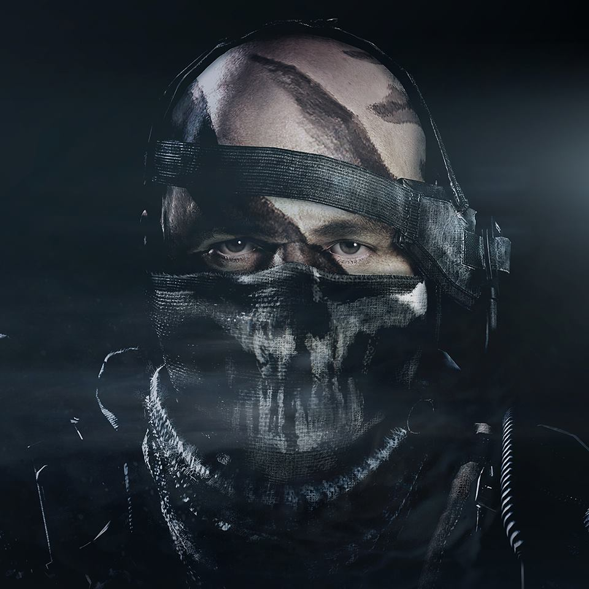

.png)
COD GHOST
Good men are defined by the choices they make
Call of Duty: Ghosts is a 2013 first-person shooter video game developed by Infinity Ward and published by Activision. It is the tenth major installment in the Call of Duty series and the sixth developed by Infinity Ward. It was released for PlayStation 3, Wii U, Windows, and Xbox 360, on November 5, 2013. The game was released with the launch of the PlayStation 4 and Xbox One.
LOGAN WALKER

KEEGAN P. RUSS

TTHOMAS
VILLEIANS
Hold You Chairs
Gabriel T. Rorke
Gabriel T. Rorke
I am Gabriel Rorke. I have been trained by your Government to be a weapon. Trained to kill and destroy. All in the name of Liberty and Justice. Even surrender my very life in service to your country. But I am not one of you. The "Just" have turned their backs and become deaf to your cries. Who, then will show them justice? Who will show you the Liberty they have promised? The weapon they have created will be their undoing. But do not fear this. Do not fear me. It is only natural. Like the collapse of Rome, your cities will crumble and there will be great sorrow. But from the ashes of this diseased metropolis, a rebirth will occur. It will be paid for in blood and steel. Liberty must be restored. I am Gabriel Rorke, and I am here to show you the true meaning of justice.
FEDERATION
FEDERATION
The Federation's rise to power had started years ago. When the great energy-producing deserts were destroyed, the world powers that depended on them collapsed. And in their wake, the Federation began to rise. The Federation united all of South America under one banner, and devoured everything in its path as it moved relentlessly to the north. he Federation, officially known as the Federation of the Americas (FA) (in Spanish: Federacion de las Américas; in Portuguese: Federação das Américas), are the main antagonists of the 2013 video game Call of Duty: Ghosts.t is a political, economic, and military union of North and South American nations that seek to overwhelm the United States. The Federation's capital is Caracas, Venezuela. While it is unknown who is the Federation's supreme leader, Gabriel T. Rorke is one of their top agents.